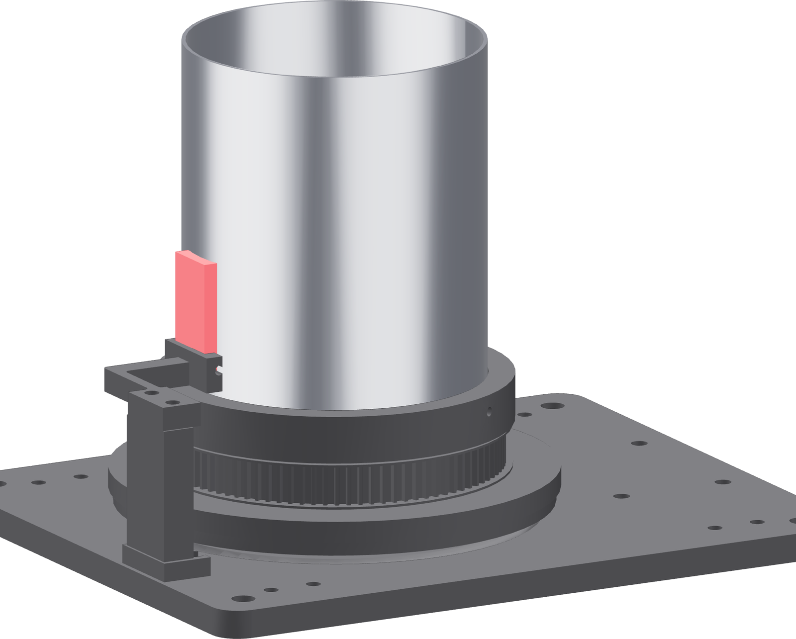

Continuity, two revolutions
The welder's conductance interlock wants an unbroken path to the work. This is how you prove the shoe gives it one through every angle of the lap.

- Laser disabled. Not standby — disabled.
- Scuff the tube's contact stripe and the copper's contact face. Immediately before use, both times, every time.
- Clamp the X1 Pro's work lead to the exposed upper 38 mm of the shoe. Not to the tube, and never to the bearing.
- Put the multimeter on continuity between the shoe and the tube.
- In mode jog, turn two complete revolutions and watch the meter the whole way round.
Gate — no blink
Two complete revolutions with not one dropout. Any blink fails setup. Clean both faces and take the reading again before the laser is enabled.
This is not a protective earth
It exists for the welder's conductance interlock. The PP balls and the printed races are not in the electrical path.